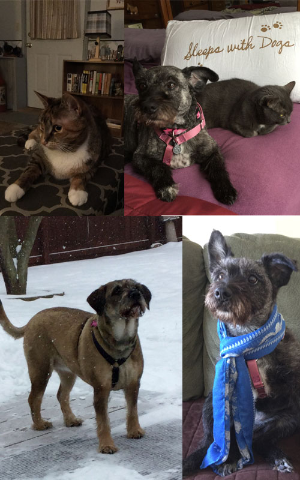

March 2015

Graycie: I am now 9 years old, I was adopted from the Harrisburg Humane Society. I was very young, only 8 weeks old. They had me in a corner cage, all by myself, and they had named me Milligram! What kind of a name is that? Well, I immediately won my humans over with nose to nose head butts, and the rest is history! I love the sun, surprising my humans by jumping up on their shoulders while they wash their faces or the dishes, bolting out of any open door! I prefer Diamonds company. Diamond: I will be 8 years old on the 4th of July! How cool is that? I came from a rescue in Hagerstown Maryland. Supposedly, a lady in Ohio was trying to create a "designer dog" by crossing Pomeranians and Schnauzers...so what does that make me?. A Pomanauzer? My mom was a schnauzer, dad was the Pom. I was not what she was striving for, since I had a wiry, schnauzer coat, so I ended up in a rescue. I have a great, brindle coloring, but the lion's mane of the Pom! I love barking, chewing on rawhide, and snuggling on the couch. I hang out with Graycie. Annie: I am about 2.5 years old. I too, am a rescue from Furry Friends Network Reportedly, I was a stray, caught and taken to a horrible shelter in WV. I was quickly pulled from that shelter by a nice lady who said I had a respiratory infection that was so bad that I could not breathe out of my nose and would not eat. After I received medical care, I was rescued by my angel , Stephanie, with the FFN, and from there, to my home in Mechanicsburg. I have been through a lot, and am scared in new situations, but my moms have taught me that some humans can be trusted! And, Chris from Pampered Pets considers winning me over a goal in life, and I love her for it. Poppy is my buddy. Poppy: I too, am a rescue from Furry Friends. I fell out of barn rafters when I was only about 2 or 3 weeks old. Some people took by to a shelter, and the shelter put out a Call for some rescue to get me before they euthanized me, because I was so young, and they could not care for me. My foster mom responded within hours, and took me home. She got up every couple of hours to bottle feed me, and look at me now! I am not quite 2 years old, and I love to look out of the window, I am very vocal at feeding time, and I love to hang out with Annie! So, all four of us "girls" came from a rescue situation. Please consider a rescue for your next pet, there are too many more of us out there! |